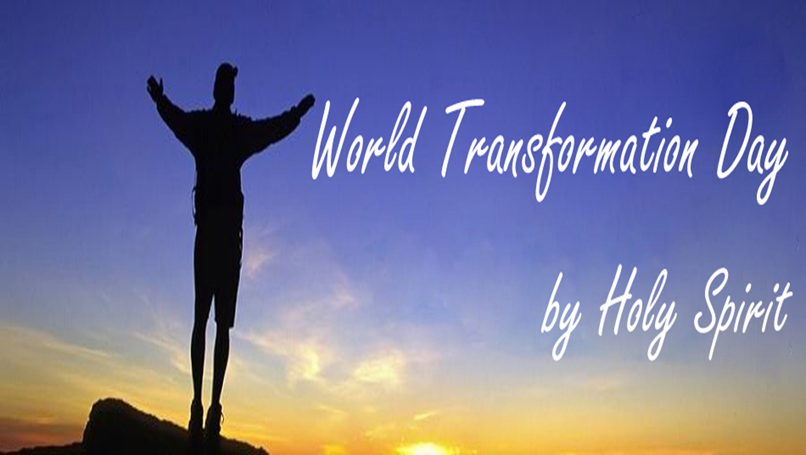
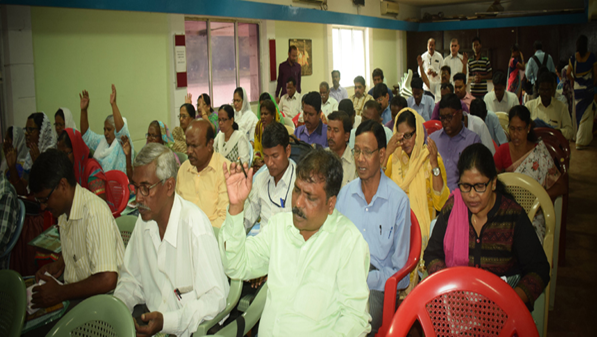
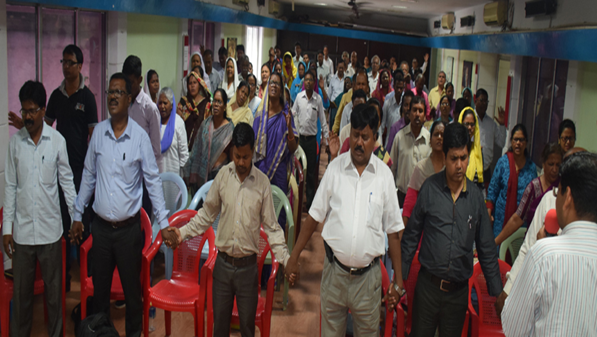

<div class="pages">
  <div data-page="features" class="page no-navbar">
    <div class="page-content">
    
  <div class="navbarpages">
    <div class="navbar_left">
      <div class="logo_text"><a href="index.html">Welfare <span>Mission</span> India</a></div>
    </div>      
    <a href="#" data-panel="left" class="open-panel">
      <div class="navbar_right"></div>
    </a>
    <a href="index.html" data-panel="right" class="navbgtransblue">
      <div class="navbar_right whitebg"></div>
    </a>          
  </div>
     
     <div id="pages_maincontent">
      
      <h2 class="page_title">About</h2>

        <!-- Slider -->
                 <div class="swiper-container-pages swiper-init" data-effect="slide" data-pagination=".swiper-pagination">
                    <div class="swiper-wrapper">
                    
                      <div class="swiper-slide">
      
                       </div>
                      <div class="swiper-slide">
      
                       </div>
                      <div class="swiper-slide">
      
                       </div>      
             
                    </div>
                    <div class="swiper-pagination"></div>
                  </div>  
    
    <div class="page_single layout_fullwidth_padding toolbarpage">  
    
    <a href="#" class="button_full">WMI</a>

            <p align="justify">A Handful of people came together and played ,and GOD laid a burden upon them, to such people with God's love. <br><br>

It was 17 years ago in June 11 ,2000 the foundation of WMI was placed and the work started.<br><br>

Every Saturday evening people use to gather for fellowship and prayers in a small room at 10 Number Basti .<br><br>

In our primary stage we reached hopeless people with small help , meeting there needs helping them and their children’s marriage ,conducting drawing competition for their children ,as they are isolated from the society.<br><br>

Every year a mega Crushed was conducted by inviting anointed and powerful servant of God from India as well as from Abroad . <br><br>

The only reason behind that was to use the people of different denomination under one root.<br><br>

Every last Friday of the month  “whole night prayer “ is conducted and we pray for the nation ,churches, servant of God and people who are unreached etc.<br><br>

We also conduct leadership seminars for the leaders pastors to make them powerful weapons to destroy the kingdom of the devil and to establish the kingdom of god with signs and wonders.</p>

        
            
              
              

              

               


          
          </div>
      


          
         
         
      
         
   
      
      
    </div>
  </div>
</div>